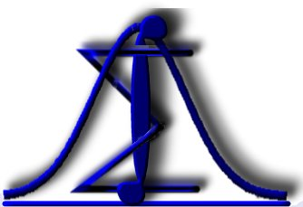

EST - Estatística
2021-09-13
Estatística
Neste página serão publicadas as anotações da disciplina de estatística para acompanhamento dos encontros síncronos.
Para maiores informações o estudante deverá consultar a bibliografia referenciada. 
Ementa
A natureza da Estatística, população e amostra. Caracterização de experimentos.
Definição de probabilidades e o estudo da variável aleatória bem como seus componentes e conceitos.
Modelos de distribuições discretas de probabilidade e de distribuições contínuas de probabilidade.
Objetivos
Geral
- Introduzir aos alunos os conceitos básicos de probabilidade e estatística.
Específicos
- Introduzir o uso de experimento, amostra e população;
- Uso da probabilidade;
- Uso de variável aleatória e distribuições.
Conteúdo Programático
- Introdução à estatística.
- Definições estatísticas;
- População, amostra e evento.
- Conceitos fundamentais.
- Modelos estatísticos;
- Medidas de tendência central e de variação.
- Análise exploratória de dados.
- Dados, variáveis qualitativas e quantitativas;
- Distribuições de frequência e representação gráfica;
- Estimação das medidas de tendência central, de variação e de posição.
- Probabilidade e contagem.
- Espaços amostrais, eventos e operações entre eventos;
- Probabilidade condicional;
- Regras da multiplicação e da adição.
- Distribuições discretas de probabilidades.
- Distribuições de Bernoulli, Binomial e de Poisson.
- Distribuições contínuas de probabilidades.
- Distribuição Normal e Normal Padrão.
- Testes de hipóteses.
- Testes unilaterais e bilaterais;
- Erros de decisão.
- Introdução ao estudo de regressão e correlação:
- Regressão linear simples: estimação dos parâmetros do modelo;
- Inferências sobre os parâmetros;
- Correlação.
Metodologia de ensino e percurso formativo
Ensino remoto, via ambiente virtual de aprendizagem (Moodle), em concordância com Normas vigentes para a oferta de Carga Horária Semipresencial em Cursos Presenciais do IF Goiano e Regulamento de Oferta de Carga Horária Semipresencial em Cursos Presenciais do IF Goiano – Campus Morrinhos.
As aulas serão ministradas nos encontros síncronos dispostos no Ambiente Virtual de Aprendizagem AVA – Moodle, contendo:
- Slides e textos teóricos sobre o conteúdo ministrado;
- Fórum para dúvidas;
- Link para o encontro síncrono via Google Meet;
- Atividades e questionários para o acompanhamento da aprendizagem.
Em cada aula serão apresentados os conceitos teóricos relacionados ao conteúdo em estudo.
Serão resolvidos exercícios e utilizadas ferramentas eletrônicas para a análise de dados.
Mecanismos de atendimento individualizado aos estudantes
- Os estudantes deverão primar pela participação em Fóruns, visando o compartilhamento das dúvidas.
- Mandar e-mail para o professor.
- Contudo, será oferecido a possibilidade de agendamento de videoconferências individualizadas ou horários para videoconferências tira-dúvidas.
E-mail:
antonio.neco@ifgoiano.edu.br
Forma, número e critérios de avaliação
Atividade(s) avaliativa(s):
- Avaliações semanais dos conteúdos estudados através de listas de exercícios.
- Trabalhos avaliativos utilizando erramentas eletrônicas de análise de dados.
- Cada atividade realizada valerá 10,0 (dez) pontos e a nota final será a média aritmética das notas de todos os trabalhos desenvolvidos no período.
- Listas de exercícios e questionários, disponibilizados no AVA-Moodle, de acordo com o conteúdo estudado.
Feedback da avaliação:
- Ao final de cada atividade avaliativa no Moodle, serão fornecidas as respostas esperadas e a atividade será tema de discussão no encontro virtual seguinte, caso haja dúvidas.
*Essas avaliações poderão ser modificadas, considerando a necessidade de cada turma e/ou o andamento do ano letivo, desde que devidamente esclarecidas para a turma.
Referências
Básica
FONSECA, J. S. & MARTINS, G.A. Curso de estatística. 6ª ed., São Paulo: Atlas, 1996. 320p.: UFSC, 2003. BARBETTA, P. A.; REIS, M. M.; BORNIA, A. C. Estatística para cursos de Engenharia e Informática. Editora Atlas, 2004. CRESPO, A. A. Estatística. São Paulo: Editora Saraiva, 1997.
Complementar
LAPPONI, J. C. Estatística usando o Excel. São Paulo: Lapponi Treinamento, 2000. BUSSAB, W. O. & MORETTIN, P. A. Estatística Básica. Editora Saraiva, 5º edição, 2006. MURTEIRA, B. Probabilidades e Estatísticas, Vol 1 e 2. Mc Graw-Hill, 1997. TOLEDO, G. L.; OVALLE, I. L. Estatística Básica. São Paulo: Atlas, 1995. MORETTIN, P.A. & BUSSAB, W.O. Métodos Quantitativos. 4ª Ed., São Paulo: Atual Editora Ltda., 1991.
Sugerida
LARSON, R. & FARBER, B. Estatística aplicada. 6ª ed. São Paulo: Pearson Education do Brasil, 2015.